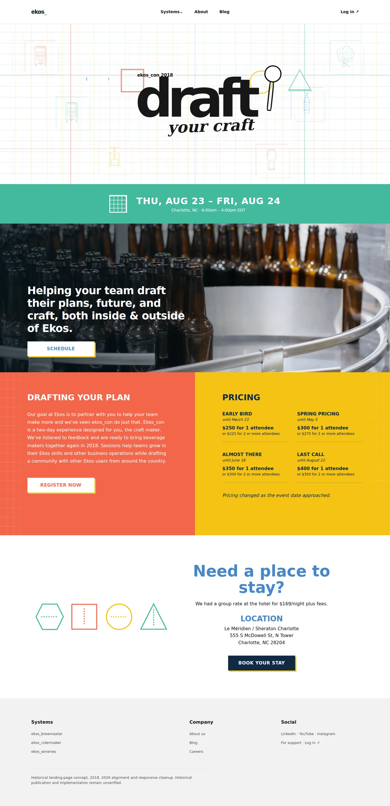
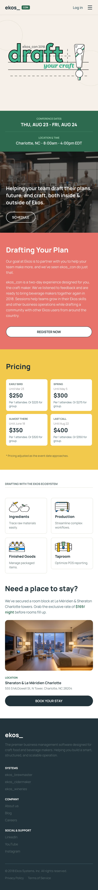
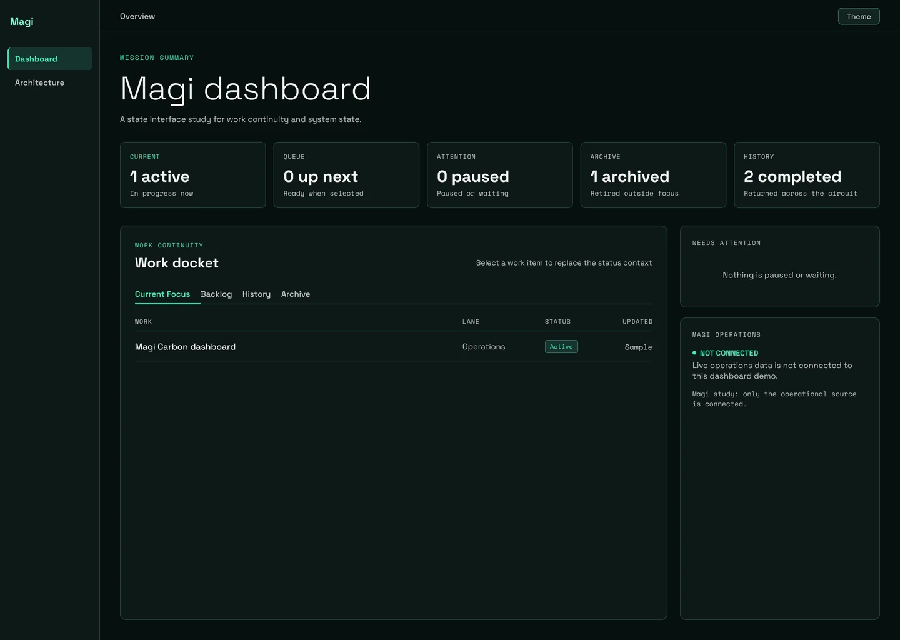
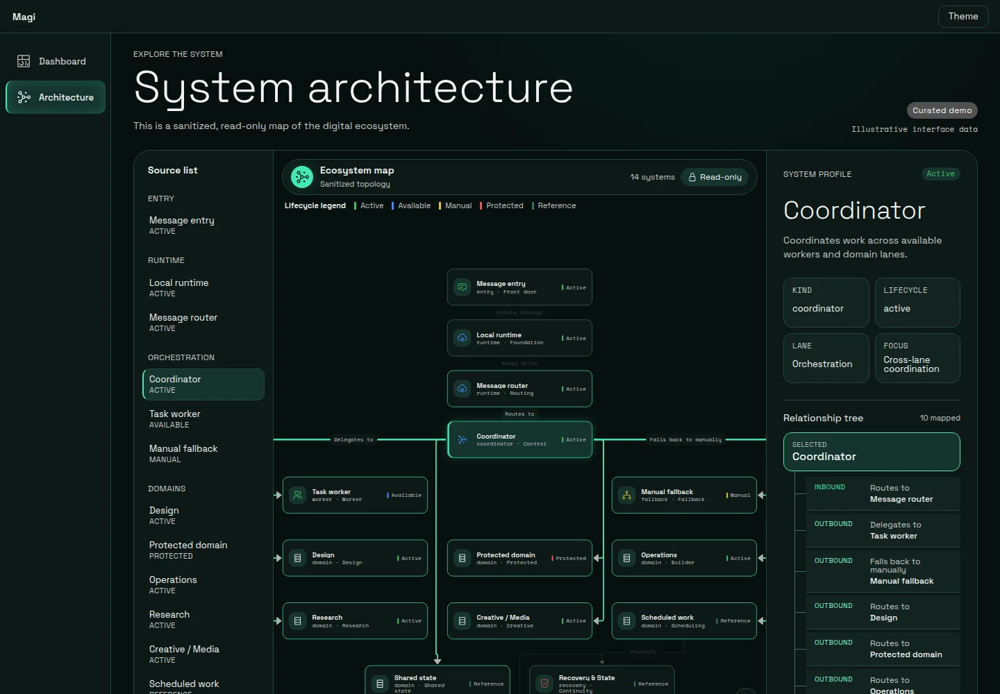
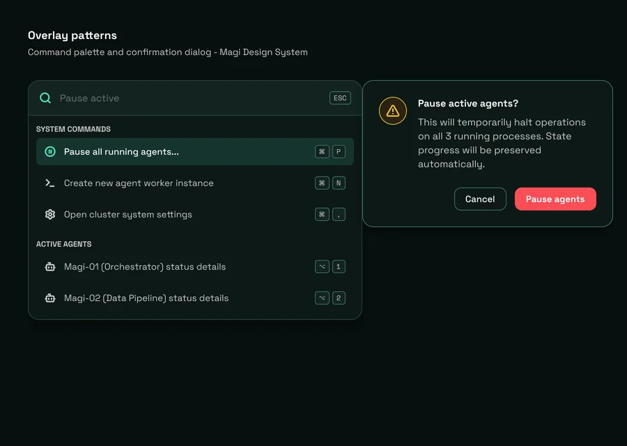
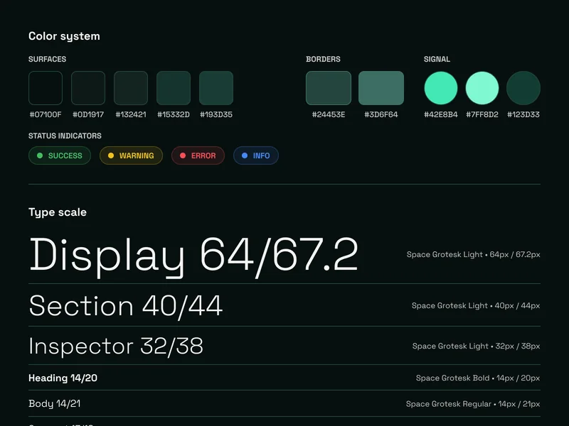
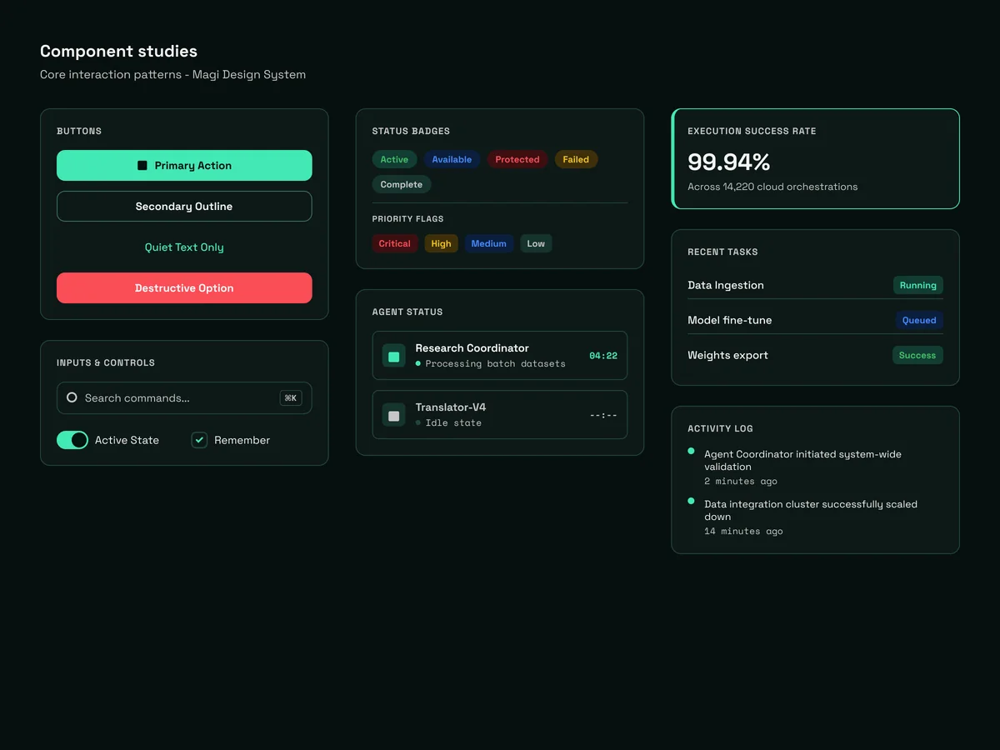
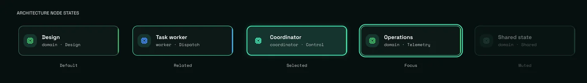

Interface Studies
Interfaces, in view.
A few interface studies and small experiments I liked enough to keep around.
Ekos Con 2018
A conference landing page for craft beverage makers, shown in complete desktop and mobile frames. Event and registration details are illustrative.


Magi interface studies
A dark interface system explored through dashboards, architecture, components, and interaction patterns. Interface details use fictional sample data and are shown as design examples rather than production data.





